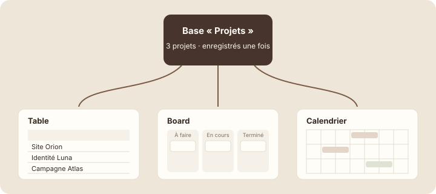
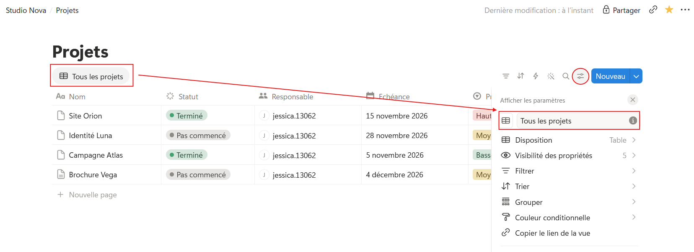
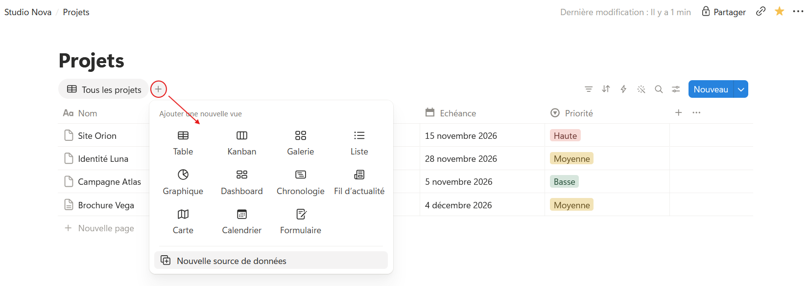

Une base, plusieurs vues
Étape 1 : comprendre
À retenir
Une vue est une façon d'afficher une base. Les données, elles, ne sont jamais copiées.
Le besoin
Ta base « Projets » s'affiche en table. Mais Emma veut voir l'avancement en colonnes, et Lucas veut savoir ce qui tombe cette semaine.
Faut-il une base pour chacun ? Non : il suffit de plusieurs vues.
Une base, plusieurs vues
- Une base peut avoir autant de vues que tu veux : tableau, colonnes de suivi, calendrier…
- Les projets ne sont enregistrés qu'une seule fois.
- Si tu changes le statut d'un projet dans le tableau, il change aussi dans le calendrier : c'est le même projet.
Pour imaginerDes lunettes : tu regardes la même pièce avec des lunettes de lecture ou de soleil. La pièce ne change pas ; seule ta façon de la voir change.

Ajouter une vue
- Clique sur « + »Au-dessus du tableauÀ droite de la vue actuelle. Les vues sont des onglets.
- Choisis le typeTable, Kanban, calendrier…La nouvelle vue s'ouvre.
- Donne-lui un nomDans les réglages de la vueUn nom qui dit à quoi elle sert.
Attention : supprimer une vue ne supprime aucun projet. Seule la façon de les afficher disparaît.
Supprimer la base, en revanche, supprime tous les projets. Lis bien le menu avant de cliquer.
Trois vues de la base Projets
Passe d'un onglet à l'autre : ce sont toujours les trois mêmes projets. Ouvre « Site Orion » dans une vue, puis dans une autre : c'est la même page.
Ajouter une vue « Suivi »
- Ouvre ta base « Projets » : elle s'affiche en table. Au départ, sa seule vue porte le nom donné par Notion : « Table ».
- Pour nommer la vue, clique sur l'icône des réglages (les petits curseurs), juste à gauche du bouton bleu « Nouveau ». Le panneau « Afficher les paramètres » s'ouvre : tout en haut, remplace « Table » par « Tous les projets ».

- Clique sur le + au-dessus du tableau, à droite de la vue « Tous les projets ». Le menu « Ajouter une nouvelle vue » s'ouvre.

- Choisis Kanban. Notion range les projets en colonnes selon leur statut.
- Nomme la nouvelle vue « Suivi », dans les réglages de la vue comme à l'étape 2. Tu as maintenant deux onglets au-dessus de la base : « Tous les projets » et « Suivi ».
- Dans « Suivi », passe « Identité Luna » en « En cours ». Reviens sur « Tous les projets » : le statut a changé là aussi.
Astuce : donne à chaque vue un nom qui dit à quoi elle sert (« Suivi », « Cette semaine », « Mes projets ») plutôt que son type (« Kanban 2 »).
Étape 3 : vérifier
Objectif de la leçon
Tu sais maintenant ce qu'est une vue et en ajouter une à ta base, sans jamais dupliquer tes données.
Choisis une réponse avant de valider.
Les vues affichent les mêmes entrées. Une modification faite dans l'une se retrouve partout.
Choisis une réponse avant de valider.
Une vue n'est qu'une manière d'afficher la base. La supprimer ne touche à aucun projet.